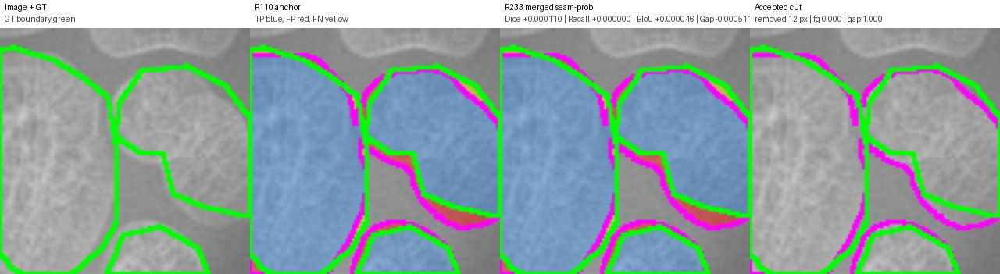
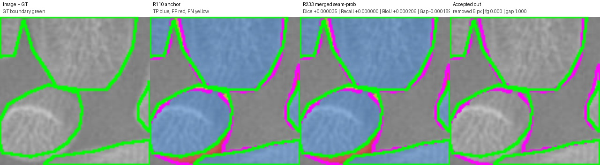
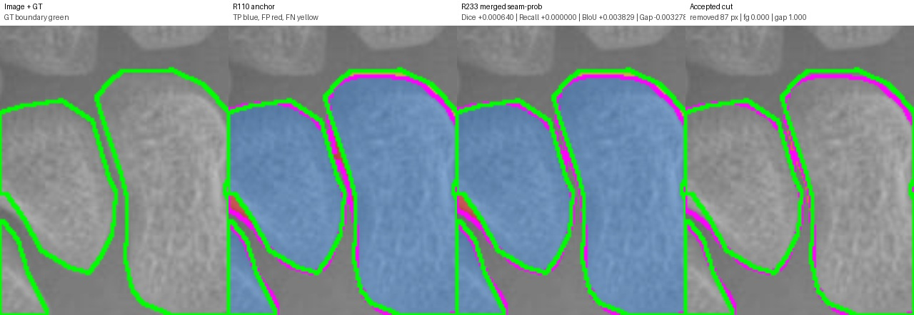
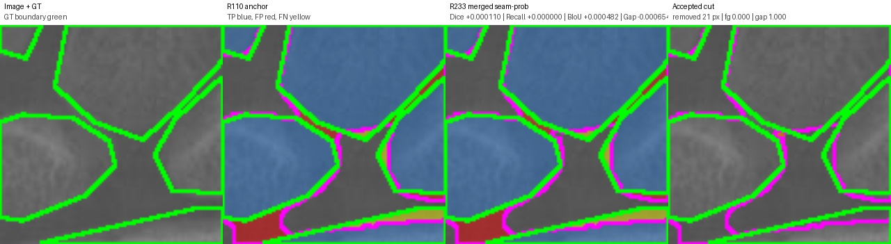

Legend: GT boundary green, prediction boundary magenta, TP blue tint, FP red, FN yellow. Accepted cuts: orange if true gap/background, red if GT foreground.
cut=12.0 px, Dice +0.000110, Recall +0.000000, BIoU +0.000046, gapFP -0.000511

{
"anchor_boundary_f1": "0.27669350802966197",
"anchor_boundary_iou": "0.1605596620908131",
"anchor_component_count_mae": "4.0",
"anchor_component_delta_mean": "-4.0",
"anchor_dice": "0.8648620047409414",
"anchor_gap_region_fp_rate": "0.2727621156630611",
"anchor_iou": "0.7619003225626014",
"anchor_precision": "0.8488719930200673",
"anchor_recall": "0.8814659821390052",
"cut_pixels": "12.0",
"delta_boundary_f1": "6.865659061999763e-05",
"delta_boundary_iou": "4.623857947771981e-05",
"delta_component_count_mae": "0.0",
"delta_component_delta_mean": "0.0",
"delta_dice": "0.00010984234427935391",
"delta_gap_region_fp_rate": "-0.0005110297248956952",
"delta_iou": "0.00017050789561456892",
"delta_precision": "0.00021166238449565888",
"delta_recall": "0.0",
"edited": "1.0",
"image": "13867.png",
"num_accepted_cuts": "1.0",
"r233_boundary_f1": "0.27676216462028197",
"r233_boundary_iou": "0.16060590067029082",
"r233_component_count_mae": "4.0",
"r233_component_delta_mean": "-4.0",
"r233_dice": "0.8649718470852208",
"r233_gap_region_fp_rate": "0.2722510859381654",
"r233_iou": "0.762070830458216",
"r233_precision": "0.849083655404563",
"r233_recall": "0.8814659821390052"
}
cut=5.0 px, Dice +0.000035, Recall +0.000000, BIoU +0.000206, gapFP -0.000189

{
"anchor_boundary_f1": "0.4406073474620408",
"anchor_boundary_iou": "0.28255061144794985",
"anchor_component_count_mae": "1.0",
"anchor_component_delta_mean": "-1.0",
"anchor_dice": "0.9396147686702027",
"anchor_gap_region_fp_rate": "0.19084602624038607",
"anchor_iou": "0.88610699291979",
"anchor_precision": "0.9265328001854427",
"anchor_recall": "0.953071443474114",
"cut_pixels": "5.0",
"delta_boundary_f1": "0.0002498526180713667",
"delta_boundary_iou": "0.00020552872263901456",
"delta_component_count_mae": "0.0",
"delta_component_delta_mean": "0.0",
"delta_dice": "3.4513953345527426e-05",
"delta_gap_region_fp_rate": "-0.00018850852058513445",
"delta_iou": "6.13919599350421e-05",
"delta_precision": "6.712157523192097e-05",
"delta_recall": "0.0",
"edited": "1.0",
"image": "15040.png",
"num_accepted_cuts": "1.0",
"r233_boundary_f1": "0.44085720008011214",
"r233_boundary_iou": "0.28275614017058887",
"r233_component_count_mae": "1.0",
"r233_component_delta_mean": "-1.0",
"r233_dice": "0.9396492826235482",
"r233_gap_region_fp_rate": "0.19065751771980094",
"r233_iou": "0.886168384879725",
"r233_precision": "0.9265999217606746",
"r233_recall": "0.953071443474114"
}
cut=87.0 px, Dice +0.000640, Recall +0.000000, BIoU +0.003829, gapFP -0.003278

{
"anchor_boundary_f1": "0.44864",
"anchor_boundary_iou": "0.2891914191419142",
"anchor_component_count_mae": "2.0",
"anchor_component_delta_mean": "-2.0",
"anchor_dice": "0.937545553578846",
"anchor_gap_region_fp_rate": "0.19222218035196142",
"anchor_iou": "0.8824336485549474",
"anchor_precision": "0.9203286558345642",
"anchor_recall": "0.9554188962542928",
"cut_pixels": "87.0",
"delta_boundary_f1": "0.0045942482720044975",
"delta_boundary_iou": "0.003829193556334487",
"delta_component_count_mae": "-1.0",
"delta_component_delta_mean": "1.0",
"delta_dice": "0.0006396867944581386",
"delta_gap_region_fp_rate": "-0.003278441421411621",
"delta_iou": "0.00113406593335319",
"delta_precision": "0.0012336275026209043",
"delta_recall": "0.0",
"edited": "1.0",
"image": "15067.png",
"num_accepted_cuts": "1.0",
"r233_boundary_f1": "0.4532342482720045",
"r233_boundary_iou": "0.2930206126982487",
"r233_component_count_mae": "1.0",
"r233_component_delta_mean": "-1.0",
"r233_dice": "0.9381852403733041",
"r233_gap_region_fp_rate": "0.1889437389305498",
"r233_iou": "0.8835677144883006",
"r233_precision": "0.9215622833371852",
"r233_recall": "0.9554188962542928"
}
cut=21.0 px, Dice +0.000110, Recall +0.000000, BIoU +0.000482, gapFP -0.000654

{
"anchor_boundary_f1": "0.4165490993799009",
"anchor_boundary_iou": "0.2630641084082715",
"anchor_component_count_mae": "2.0",
"anchor_component_delta_mean": "-2.0",
"anchor_dice": "0.9322967245782929",
"anchor_gap_region_fp_rate": "0.19494562338350316",
"anchor_iou": "0.8731796052700757",
"anchor_precision": "0.926983914358751",
"anchor_recall": "0.9376707843092974",
"cut_pixels": "21.0",
"delta_boundary_f1": "0.0006038741956023164",
"delta_boundary_iou": "0.00048187336471938735",
"delta_component_count_mae": "0.0",
"delta_component_delta_mean": "0.0",
"delta_dice": "0.00010991349406119788",
"delta_gap_region_fp_rate": "-0.0006543890810507547",
"delta_iou": "0.00019285218769760082",
"delta_precision": "0.00021735403632716643",
"delta_recall": "0.0",
"edited": "1.0",
"image": "1620.png",
"num_accepted_cuts": "1.0",
"r233_boundary_f1": "0.41715297357550324",
"r233_boundary_iou": "0.2635459817729909",
"r233_component_count_mae": "2.0",
"r233_component_delta_mean": "-2.0",
"r233_dice": "0.9324066380723541",
"r233_gap_region_fp_rate": "0.1942912343024524",
"r233_iou": "0.8733724574577733",
"r233_precision": "0.9272012683950782",
"r233_recall": "0.9376707843092974"
}